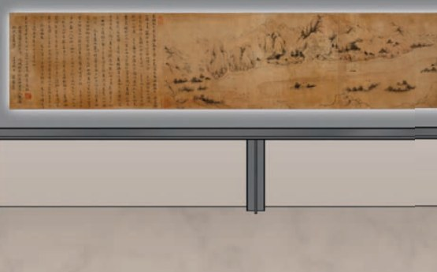

사림의 성장과 4대 사화 및 붕당정치의 형성
성종 대 중앙 언론 삼사(3사)에 진출한 사림파와 훈구파의 충돌로 촉발된 4대 사화(무오·갑자·기묘·을사), 서원과 향약을 발판으로 최종 집권한 사림이 이조전랑 임명 갈등을 계기로 형성한 동인·서인·남인·북인의 붕당 정치와 삼사 공론 정치, 그리고 16세기 사림의 성리학·예학·사학 심화와 서원 건축·가사·사군자·백자 문화를 15세기 말부터 16세기까지의 단방향 시간순 인과로 입체 분석합니다.
1. 훈구와 사림의 대립 및 4대 사화(무오·갑자·기묘·을사)의 전개
앞 단원에서 살펴본 바와 같이, 제9대 성종은 ｢경국대전｣을 완성·반포하고 홍문관과 관수관급제를 정비하는 한편, 세조의 계유정난 이래 의정부·6조 고위직과 왕실 중첩 혼인, 대토지·노비와 공납 방납을 독점하며 비대해진 훈구파를 견제하려는 목적에서 영남 지방에서 올라온 김종직과 그 문인들을 중앙 정계에 본격 등용하였습니다. 고려 말 온건파 사대부인 정몽주·길재의 학통을 계승하여 영남과 기호의 향촌에서 중소 지주 기반 위에 성리학을 연마하던 사림파는 주로 언론 삼사(3사: 사헌부·사간원·홍문관)에 포진하여 왕도 정치와 도덕적 명분, 향촌 자치를 내세우며 훈구 대신들의 부패와 특권을 거침없이 탄핵하였습니다. 이에 기득권을 위협받은 훈구파와 신하들의 직언·언론 견제를 불편해하던 국왕의 이해관계가 맞물리면서 네 차례의 사화가 연이어 터졌습니다. 먼저 연산군 때인 1498년, 김종직이 세조의 단종 왕위 찬탈을 초나라 항우의 의제 살해에 빗대어 풍자한 ｢조의제문｣을 제자 김일손이 ｢성종실록｣ 편찬 과정의 사초에 수록하자, 이극돈·유자광 등 훈구파가 이를 왕조 정통성에 대한 반역으로 몰아 김일손을 처형하고 김종직을 부관참시한 무오사화(1498년)가 일어났습니다. 뒤이어 1504년에는 연산군 생모인 폐비 윤씨 사사 사건의 전말과 관련자 명단을 임사홍이 연산군에게 밀고하자, 과거 폐비에 찬성하거나 방조했던 김굉필·정여창 등 사림파는 물론 윤필상·한명회 등 훈구 대신까지 함께 숙청당한 갑자사화(1504년)가 폭발하였습니다. 이후 연산군이 사간원과 경연을 폐지하고 한글 탄압까지 일삼는 폭정이 극에 달하자, 위기를 느낀 박원종·성희안·유순정 등 무신과 훈구 세력이 1506년 중종반정을 일으켜 연산군을 폐위(강화 교동도 유배)하고 진성대군(중종)을 추대하였습니다.
그러나 반정으로 추대된 제11대 중종은 자신을 세워 준 반정 공신(정국공신)들이 막대한 토지와 관직을 독점하며 왕권을 압박하는 새로운 위기에 직면하였습니다. 이에 중종은 공신 세력을 꺾고 왕권을 회복하겠다는 목적 아래, 훗날 용인 심곡서원에 배향되는 신진 사림의 영수 조광조를 대사헌에 발탁하여 도학 정치를 밀어붙였습니다. 조광조는 유교적 이상 사회를 실현하기 위해 첫째, 덕행과 학식이 뛰어난 인재를 추천받아 국왕 앞 대책 시험(친시)으로 등용하는 천거제인 현량과를 실시하여 사림을 대거 끌어들였고, 둘째, 도교 제사(초제)를 주관하던 관청인 소격서를 폐지하여 성리학적 이념의 순수성을 세웠으며, 셋째, 유교 윤리 입문서인 ｢소학｣ 교육과 김안국이 한글로 번역·간행한 향촌 자치 규약 ｢여씨향약｣의 보급, 경연 강화와 공납 방납 폐단 시정을 추진하였습니다. 나아가 조광조가 중종반정 때 공을 세우지 않고 거짓으로 공신에 오른 정국공신 117명 가운데 76명의 훈작과 토지를 몰수하는 위훈 삭제를 단행하자, 기득권을 빼앗길 처지에 놓인 홍경주·남곤·심정 등 훈구파는 궁궐 나뭇잎에 꿀로 '주초위왕(조씨가 왕이 된다)'이라는 글자를 써서 벌레가 파먹게 꾸민 모함 사건을 조작하였습니다. 급진적 개혁과 사림의 도덕적 압박에 피로감을 느낀 중종마저 등을 돌리면서 조광조 일파가 사사·유배되고 현량과가 폐지된 기묘사화(1519년)가 일어났습니다.
중종이 세상을 떠나고 인종이 조광조의 직위 회복 유언을 남긴 채 즉위 8개월 만에 승하한 뒤 12세의 어린 제13대 명종이 왕위에 오르자, 정국은 왕실 외척 간의 격렬한 권력 투쟁 속으로 빨려 들어갔습니다. 인종의 외삼촌인 대윤(윤임) 세력과 명종의 외삼촌인 소윤(윤원형) 및 수렴청정을 맡은 어머니 문정왕후 세력이 정권 장악을 놓고 정면으로 충돌한 것입니다. 정권을 독점하려던 소윤 윤원형 일파가 대윤 윤임 세력에게 역모 혐의를 씌워 숙청하면서, 대윤과 연계되거나 소윤의 전횡을 비판하던 사림파가 대거 희생된 사건이 을사사화(1545년)입니다. 이후 문정왕후와 윤원형은 유림의 반대를 억누르고 왕실 권위를 다지려는 의도에서 앞 단원 성종 때 도첩제를 폐지하며 억불 정책을 강화했던 것과 달리 승려 보우를 중용해 선교 양종과 승과를 일시 부활시키는 등 불교 중흥책을 폈으며, 1547년(명종 2년) 경기도 과천 양재역 벽에 '위로는 여주가 정권을 잡고 아래에서는 간신 이기가 권세를 농간하니 나라가 곧 망할 것'이라는 붉은 글씨 벽서가 나붙은 양재역 벽서 사건(정미사화)을 빌미로 남은 사림 세력을 철저히 색출하였습니다. 이때 중종에게 도학 정치를 건의하는 상소 ｢일강십목소｣와 ｢진수팔규｣를 올렸던 사림의 거두 회재 이언적이 평안도 강계로 유배되어 세상을 떠났으며(사후 경주 옥산서원 배향), 노수신·유희춘·백인걸 등 많은 사림 인사가 유배·숙청의 고초를 겪었습니다.
| 사화 명칭 (연도) | 재위 국왕 | 발생 원인과 핵심 사료 키워드 | 결과 및 역사적 영향 |
|---|---|---|---|
| 1. 무오사화 (1498) | 연산군 | 김종직이 세조의 단종 왕위 찬탈을 풍자한 ｢조의제문｣을 제자 김일손이 ｢성종실록｣ 사초에 수록 | 훈구파(이극돈·유자광) 고발로 김일손 처형 및 김종직 부관참시, 사림 세력 최초의 대규모 수난 |
| 2. 갑자사화 (1504) | 연산군 | 연산군 생모 폐비 윤씨 사사 사건의 전말과 관련자 폭로 (임사홍 밀고) | 폐비에 찬성·방조한 김굉필·정여창 등 사림파와 윤필상·한명회 등 훈구 대신 동시 숙청 ➔ 폭정 심화 ➔ 중종반정(1506) |
| 3. 기묘사화 (1519) | 중종 | 조광조의 도학 정치 개혁(현량과 실시 · 소격서 폐지 · ｢소학｣과 ｢여씨향약｣ 보급 · 정국공신 76명 위훈 삭제) 및 훈구파의 '주초위왕' 모함 | 조광조 사사(훗날 용인 심곡서원 배향) 및 현량과 폐지, 사림이 중앙에서 물러나 향촌 기반 다짐 |
| 4. 을사사화 (1545) | 명종 | 왕실 외척 권력 투쟁: 인종 외척 대윤(윤임) 대 명종 외척 소윤(윤원형·문정왕후) | 소윤 승리로 사림 희생, 문정왕후의 보우 등용 및 양재역 벽서 사건(1547)으로 이언적(강계 유배·경주 옥산서원) 등 추가 탄압 |
2. 사림의 향촌 기반(서원·향약)과 붕당 정치의 형성(동서 분당·남북 분화)
네 차례의 사화로 중앙 정계의 사림 지도부가 거듭 도륙되었음에도 불구하고, 사림파가 소멸하지 않고 16세기 후반에 이르러 오히려 중앙 정권을 완전히 장악할 수 있었던 비결은 지방으로 물러난 사림들이 향촌 사회에 튼튼한 재생산 기지를 구축한 데 있었습니다. 중앙 권력에서 밀려난 사림은 당장 조정에 복귀하는 대신, 고향에서 후학을 길러 과거로 재진출하고 지방 농민에 대한 지배력을 굳히겠다는 목적 아래 서원과 향약이라는 두 제도를 전국으로 확산시켰습니다. 첫 번째 기둥인 서원은 훌륭한 유학자를 제사 지내는 사당(제향) 기능과 지방 양반 자제들에게 성리학을 가르치는 사립 학교(강학) 기능을 결합한 향촌 사림의 구심점이었습니다. 1543년(중종 38년) 풍기 군수 주세붕이 고려 말 성리학을 처음 들여온 안향을 배향하기 위해 세운 백운동서원이 우리나라 최초의 서원이었습니다. 뒤이어 풍기 군수로 부임한 퇴계 이황은 사립 서원에 국가의 공인과 물적 지원을 끌어내어 사림의 위상을 높이려 건의하였고, 그 결과 1550년(명종 5년) 국왕 명종으로부터 친필 현판 '소수서원'과 서적·토지·노비를 하사받아 면세·면역 특권을 누리는 최초의 사액서원이 탄생하였습니다. 이는 앞 단원에서 살펴본 중앙 정부가 지방 군현마다 세워 교수·훈도 등 교관을 파견한 국립 중등 교육 기관인 향교(및 한양의 4부 학당)나 최고 국립 대학 성균관(고려 성종 대 개경의 국립 최고 교육 기관 국자감 전통 계승)과 구별되는, 지방 사림 주도의 독자적인 사립 중등 교육 기관이자 공론 형성 기지였습니다.
사림 부활의 두 번째 기둥인 향약은 전통 농촌의 상부상조 공동체 풍습(두레)에 유교의 삼강오륜 도덕 규범을 결합한 향촌 자치 규약으로(고려 말 이래 불교 신앙을 바탕으로 갯벌에 향나무를 묻는 매향 활동과 불상 조성을 주관하던 향도와는 성격이 다름), 덕업상권(좋은 일은 서로 권함)·과실상규(잘못은 서로 규제함)·예속상교(예의 있는 풍속으로 사귐)·환난상휼(어려운 일은 서로 도움)의 4대 덕목을 실천 강령으로 삼았습니다. 중종 대 조광조가 중국의 ｢여씨향약｣을 번역·보급하려다 좌절된 이후, 16세기 후반 이황(｢예안향약｣)과 이이(｢서원향약｣·｢해주향약｣) 등이 우리 농촌의 실정에 맞게 재편한 향약을 보급하면서 전국에 빠르게 뿌리를 내렸습니다. 지방 양반 사족들은 자기 가문과 지역 유림의 명부인 향안을 작성하고 향회(사족 총회)를 여는 한편, 앞 단원에서 배운 성종 대 복설된 유향소(향청, 좌수·별감)와 향약의 임원(도약정·부약정·직월 등)을 겸임하여 수령과 향리의 횡포를 견제하고 농민을 도덕적으로 교화·통제하였습니다. 이처럼 서원에서 배출된 수많은 사림 후학들이 과거 시험을 통해 중앙 정계로 물밀듯이 올라오고 향약으로 향촌 지배력을 장악한 상태에서, 1567년 선조가 즉위해 명종 대 외척 정치를 청산하고 사림을 대거 기용하자 마침내 사림파는 훈구·외척 세력을 완전히 밀어내고 중앙 정국의 최종 주인이 되었습니다.
선조 대에 이르러 마침내 중앙 정권을 완전히 장악한 사림은 이제 공동의 적이었던 훈구와 외척 세력이 사라지자, 사림 내부의 정치적 노선과 인사권을 둘러싸고 두 갈래로 분화하게 됩니다. 직접적인 도화선은 명종 대 외척(척신) 정치의 잔재를 얼마나 철저히 청산할 것인가 하는 입장 차이와 인사·언론의 핵심 요직인 이조전랑 임명 문제였습니다. 이조에 소속된 이조전랑(정5품 정랑과 정6품 좌랑)은(도승지 등 6승지가 왕명 출납을 전담하던 비서 기관 승정원과는 별개 기구) 품계는 낮은 당하관에 불과하였으나, 재상의 간섭을 받지 않고 언론 삼사(사헌부·사간원·홍문관)의 관원을 선발·추천하는 통청권과 물러날 때 자신의 후임자를 직접 추천하는 자천권(자대권)을 쥐고 있어 정국과 공론을 좌우하는 노른자위 직책이었습니다(이 특권은 훗날 18세기 영조 대 탕평책을 추진할 때 비로소 폐지됨). 1575년(선조 8년, 을해당론) 척신 심의겸의 아우 심충겸이 후임 전랑 후보로 거론되자, 철저한 척신 청산을 주장하며 기성 세력을 비판하던 신진 사림은 서울 동쪽에 살던 김효원을 중심으로 동인(이황·조식·서경덕 문인 주축)을 형성하였고, 온건한 처리를 옹호하던 기성 사림은 서울 서쪽에 살던 왕실 외척 출신 심의겸을 중심으로 서인(이이·성혼 문인 주축)을 형성하면서 조선의 붕당 정치가 시작되었습니다. 본래 초기 붕당 정치는 지방 서원과 향촌 사족의 여론, 그리고 중앙 언론 삼사의 공론 정치를 기반으로, 서로 다른 정치적·학문적 견해를 가진 붕당들이 상호 비판과 견제를 통해 공존함으로써 특정 세력의 일당 독재를 막고자 한 균형 원리에 입각해 있었습니다.
그러나 왕권과의 관계 및 정국 주도권을 둘러싼 권력 경쟁이 치열해지면서, 초기 붕당의 공존과 상호 비판 원리는 점차 상대 붕당을 역모로 몰아 제거하는 대규모 옥사로 변질되기 시작하였습니다. 1589년(선조 22년) 서인에서 동인으로 옮긴 정여립이 전라도 진안 죽도 등지에서 대동계를 조직하고 '천하는 공물이니 어찌 일정한 주인이 있으랴'라고 외치며 모반을 꾀했다는 고변이 일어나자(정여립 모반 사건), 수사 책임자(위관)를 맡은 서인의 영수 정철이 이 사건에 연루된 이발·정개청 등 동인 세력 1천여 명을 가혹하게 숙청하여 정권을 잡았습니다(기축옥사). 그러나 2년 뒤인 1591년, 적장자가 없던 선조에게 좌의정 정철이 후궁 소생인 광해군을 왕세자로 책봉할 것을 건의한 건저의 사건이 발생하여 다른 왕자를 염두에 두던 선조의 진노를 사 정철이 파직·유배되자, 정국은 다시 동인의 수중으로 넘어왔습니다(훗날 숙종 대 희빈 장씨 소생 원자 책봉 문제로 송시열 등 서인이 실각한 기사환국과 혼동 금지). 이때 기축옥사의 원한을 갚기 위해 정철과 서인을 엄하게 처벌해야 한다고 주장한 강경파는 북인(이산해·정인홍 등, 조식·서경덕 학맥)이 되었고, 과도한 보복을 자제하고 적정 선에서 마무리하자는 온건파는 남인(유성룡 등, 이황 학맥)으로 갈라졌습니다. 이처럼 사림이 동인(남인·북인)과 서인으로 나뉘어 상호 비판과 갈등이 교차하던 1592년, 조선은 준비가 부족한 상태에서 다음 장에서 다룰 임진왜란이라는 거대한 외침을 맞게 됩니다.
| 제도 · 사건 (연도) | 성격 및 핵심 쟁점 | 주도 인물 · 세력 변화 | 시험장 1초 구별 포인트 |
|---|---|---|---|
| 서원 (백운동 ➔ 소수서원) |
지방 사림 설립 사립 중등 교육 기관 (선현 제향 + 성리학 강학) |
주세붕 백운동서원(1543, 안향 배향) ➔ 이황 건의 명종 사액 '소수서원'(1550) | · 사액서원은 서적·토지·노비 하사 및 면세·면역 특권 · 향교(교관 파견 국립 중등)·성균관(국립 대학)과 구별 |
| 향약 (예안·서원·해주향약) |
4대 덕목: 덕업상권 · 과실상규 · 예속상교 · 환난상휼 | 조광조 ｢여씨향약｣ 보급 시도 ➔ 이황(예안향약)·이이(서원·해주향약) | · 향안·유향소(좌수·별감)·향회와 결합해 향촌 장악 · 1567년 선조 즉위·외척 청산으로 사림 최종 집권 |
| 동·서 분당 (1575, 을해당론) |
명종 대 척신 잔재 청산 강도 + 이조전랑(3사 통청권·후임자 자천권) 임명 갈등 | 동인(김효원 · 신진 사림: 이황·조식·서경덕 문인) 대 서인(심의겸 · 기성 사림: 이이·성혼 문인) | · 삼사(3사) 공론 정치와 붕당 간 상호 비판·공존 원리 · 이조전랑 특권은 훗날 영조 탕평책 때 폐지 (승정원과 구별!) |
| 기축옥사(1589) ➔ 건저의 사건(1591) |
정여립 모반 사건(진안 죽도 대동계) 수사 ➔ 정철 광해군 세자 책봉 건의 실각 및 처벌 논쟁 | 서인 정철 동인 탄압(기축옥사) ➔ 서인 몰락·동인 재집권 ➔ 남인(온건·유성룡) 대 북인(강경·이산해·정인홍) 분화 | · 남·북 분열의 모체는 동인(서인은 후대 노·소론 분열) · 숙종 대 기사환국(희빈 장씨 원자 책봉)과 구별! |
3. 16세기 사림의 학문 심화(성리학·예학·역사)와 사림 문화(서원 건축·가사·사군자·백자)
16세기 전반 네 차례 사화의 탄압 속에 중앙 정계에서 밀려나 지방에 은거하게 된 사림은, 관학(성균관)에 맞서는 독자적인 도학 수양 공간을 구축하여 학맥을 계승하고, 나아가 왜변과 기근이라는 현실의 위기로부터 향촌 질서와 민생을 지켜내려는 목적에서 16세기 고유의 국방·구휼 대응과 서원 건축·향촌 교화 문화를 정립하였습니다. 먼저 16세기 전반에서 중반에 걸쳐 왜구의 준동과 극심한 흉년에 맞서 국가 방위와 민생 구휼 체계가 정비되었으니, 중종 대 삼포왜란(1510년) 때 임시 군사 회의 기구로 설치되었던 비변사는 사량진 왜변(1544년)을 거쳤고, 명종 9년(1554년)에는 기근에 대비해 초근목피 등 구황 식품을 다룬 한글 언해 구황서 ｢구황촬요｣(이택 편찬)가 간행되었으며, 이듬해인 명종 대 을묘왜변(1555년)을 계기로 비변사가 정규 상설 관청으로 승격되어 16세기 국방 체제의 전사를 열었습니다(양난 이후 최고 권력 기구화는 다음 장). 이와 더불어 사림은 앞 절에서 살펴본 백운동·소수서원(1543·1550년)을 잇는 16세기 중·후반의 흐름 속에서 전국 각지에 사림의 학맥과 정신을 상징하는 서원을 본격적으로 확산시켰습니다. 안동에서는 이황이 강학하던 도산서당(1561년)이 문을 열었고, 경주에서는 을사사화·양재역 벽서 사건의 희생자인 회재 이언적을 기린 옥산서원(1572년 창건·1573년 말 사액)이 세워졌으며, 이황의 문인인 한강 정구 등이 영남 학맥과 예학을 넓히는 가운데 수제자 유성룡이 풍악서당을 옮겨 세운(1572년) 배움터는 훗날 제자 정경세 등이 서원으로 완성해 유성룡을 배향한 안동 병산서원으로 이어졌고, 도산서당 또한 이황 사후 제자들이 확대 창건해 사액받은 도산서원(1574년 창건·1575년 한호가 현판 글씨를 쓴 사액)으로서 영남 사림의 본산이 되었습니다. 이 서원들은 15세기 궁궐·관청의 권위적인 좌우 대칭 구도와 달리 산수가 수려한 명승지(배산임수)에 만대루 등의 누각을 열고, 앞쪽에는 유생이 공부하는 강당과 동·서재를, 뒤쪽 높은 곳에는 선현의 위패를 모신 사당을 배치하는 전학후묘 구도로 자연과의 합일을 구현하였습니다. 동시에 조광조의 ｢여씨향약｣ 보급 시도를 계승한 향촌 자치 규범 역시 16세기 중·후반 이황의 ｢예안향약｣(1556년)에서 출발하여 이이의 ｢서원향약｣(1571년)·｢해주향약｣(1577년)까지 전국적으로 정착하면서 4대 덕목 실천을 통한 향촌 교화가 일상에 뿌리내렸습니다.
향촌의 서원과 향약 위에 지적 토대를 다진 사림은 16세기 중·후반에 이르러 사화와 붕당 정치의 격변 속에서 인간 본성과 우주 원리, 그리고 시대 모순을 타개할 정치 개혁론을 스스로 규명하고자 한국 성리학을 독자적으로 심화시켰습니다. 먼저 개성에 은거한 화담 서경덕은 만물이 기의 모임과 흩어짐으로 생성·소멸한다는 독창적인 기일원론(기 중심 철학)을 개척하여 율곡 이이의 주기론과 훗날 북인 사유에 깊은 영향을 미쳤습니다. 이어 영남학파(동인 ➔ 남인)의 종장인 퇴계 이황은 세계의 근원적 도덕 원리인 '이'의 순수성과 능동성을 강조하는 주리론(이발기수·이기호발설)과 내면 수양 방법인 '경' 사상을 정립하고, 인간의 도덕적 감정(사단)과 본능적 감정(칠정)의 유래를 놓고 호남 학자 고봉 기대승과 8년간(1559년부터 1566년까지) 사단칠정 논쟁을 벌여 조선 성리학의 수준을 동아시아 최고 경지로 끌어올렸습니다. 이황은 어린 선조에게 군주 스스로 성학을 깨우쳐 도덕적 모범을 보일 것을 열 폭 도표로 설파한 ｢성학십도｣(1568년)와 ｢주자서절요｣, ｢예안향약｣, 도산서당(도산서원)을 남겼으며 임진왜란 이후 일본에 전파되어 에도 막부 성리학 발전에 지대한 영향을 주었습니다. 반면 기호학파(서인)의 종장인 율곡 이이는 현실 세계의 변화와 작용을 일으키는 '기'의 역할을 중시하는 주기론(기발이승일도설·이기지묘)을 체계화하여, 도덕 수양('성')을 넘어 시대의 모순을 고치는 과감한 제도 개혁(경장론)을 추구하였습니다. 이이는 현명한 신하가 군주를 보좌해 바른 통치 제도를 세워야 한다는 ｢성학집요｣(1575년), 문답 형식으로 공납의 방납 폐단을 시정할 수미법(대동법의 선구) 등 개혁안을 담은 ｢동호문답｣(1569년), 국방과 내정 폐단을 통렬히 지적한 상소문 ｢만언봉사｣(1574년), 초학자 학습 지침서 ｢격몽요결｣(1577년)을 저술하고 ｢서원향약｣·｢해주향약｣·사창계약속·10만 양병설을 주장하였으며 우계 성혼의 문인들과 함께 서인 학맥을 형성하였습니다(사후 파주 자운서원 배향, 훗날 실학 개혁론에 영향). 한편 지리산 자락(산청 산천재·덕천서원, 동인 ➔ 북인)을 거점으로 활동한 남명 조식은 허리에 방울과 칼을 차고 '안으로 마음을 밝히는 것은 경이요, 밖으로 행동을 결단하는 것은 의다'라는 글귀를 새길 만큼 공허한 말보다 실천을 강조한 경의 사상과 ｢신명사도｣를 남겼으며, 명종 대 문정왕후의 수렴청정과 외척의 전횡을 직설적으로 비판한 단성소를 올렸고 제자 곽재우·정인홍 등이 임진왜란 의병장으로 봉기하여 광해군 정권의 주역으로 활약하게 됩니다.
16세기 성리학의 독자적 심화는 역사 서술(사림 사학), 외부 유학 사조에 대한 대응, 그리고 가정과 사회의 의례 질서(예학)로까지 확장되었습니다. 먼저 역사 서술에서는 15세기 성종 대 훈구·관학 주도의 관찬 통사인 ｢동국통감｣과 달리, 16세기 사림은 도덕적 대의명분과 절의를 중시하는 사찬 사서를 편찬하였습니다. 중종 대 눌재 박상의 ｢동국사략｣은 고려 말 조선 건국에 반대한 충신의 절의를 높이 평가하고 단군조선과 기자조선의 정통성을 중시하였으며, 뒤이어 박세무의 ｢동몽선습｣과 선조 대 이이의 ｢기자실기｣는 오륜의 실천과 단군조선부터 이어진 역사 및 기자 교화를 강조하며 성리학적 역사 인식을 심화시켰습니다. 사상계에서는 16세기 중종·명종 대에 명나라에서 왕수인(왕양명)의 심즉리·지행합일을 내세운 양명학이 초기에 유입되어 남언경·노수신 등 일부 지식인이 관심을 보이자, 정통 주자학의 수호에 나선 퇴계 이황이 ｢전습록논변｣(1566년)을 지어 양명학을 이단으로 강하게 비판하였습니다. 이로써 조선 학계에서는 주자학 일변도의 정통성이 굳어졌으나, 교조적 주자학 해석에 의문을 품고 실천과 경전 재해석을 모색하던 사상적 물줄기는 훗날(조선 후기) 주자학 독점을 비판한 윤휴·박세당(｢사변록｣)과 실학, 그리고 하곡 정제두의 강화 학파(양명학)로 이어지는 사상적 전사를 형성하였습니다. 나아가 사림은 도덕 규범을 백성의 일상에 뿌리내리기 위해 유교 윤리 입문서인 ｢소학｣과 관혼상제의 기본 지침서인 ｢주자가례｣를 널리 보급하는 한편, 중종 대에는 김안국의 건의와 조신의 찬집으로 앞 단원 세종 때 ｢삼강행실도｣에 빠져 있던 장유유서·붕우유신의 윤리를 보완한 ｢이륜행실도｣(1518년)를 한글 언해와 함께 간행하였습니다. 이러한 주자가례 보급과 예법 연구 전통이 축적되면서 16세기 말에 이르러 이이의 제자인 사계 김장생이 고례와 조선의 풍속·법전을 종합해 편찬한 ｢가례집람｣(1599년)이 탄생하며 조선 예학의 기틀을 확립하였고, 이는 훗날 17세기 효종·현종 대 예송 논쟁의 사상적 토대가 되었습니다.
문학과 회화·공예·건축에서도 15세기 왕실·관학 문화와 구별되는 16세기 사림 특유의 고결하고 단아한 예술 세계가 개화하였습니다. 먼저 앞 단원을 포함해 15세기 조선 전기에는 훈구·관학파와 왕실 화단 주도의 이상주의적 문화가 중심이었으니, 세종 대 화원 안견이 안평대군의 꿈을 좌하단 현실에서 우상단 복숭아꽃 핀 이상향으로 펼친 ｢몽유도원도｣(1447년), 세종부터 세조 대까지 활약한 시·서·화 삼절 문인화가 강희안이 명나라 절파 화풍을 수용해 바위에 팔을 괴고 흐르는 물을 바라보는 선비의 고독한 내면을 그린 ｢고사관수도｣(15세기 중엽), 세조의 왕위 찬탈에 저항해 경주 금오산에 은거한 생육신 김시습이 쓴 우리나라 최초의 한문 단편 소설집 ｢금오신화｣(15세기 후반), 그리고 고려 말 상감청자에서 변모해 회색 흙 바탕에 백토 분장을 입혀 소박하고 활달한 미감을 보여준 분청사기(15세기에서 16세기 초, 고유섭이 '분장회청사기'로 명명, 인화문·박지문·철화 어문)가 대표적이었습니다. 반면 사화를 피해 강호(자연)에 은거하며 도학과 절의를 갈고닦던 16세기 사림기에는 사림의 정신세계가 문예와 공예 전반을 새롭게 채색하였습니다. 문학에서는 자연을 도가 구현되는 공간으로 노래한 강호가도와 우리말의 아름다움을 살린 가사 문학이 융성하여 담양의 면앙정 송순(｢면앙정가｣)과 송강 정철(｢관동별곡｣·｢사미인곡｣·｢속미인곡｣)이 걸작을 남겼고, 회화와 서예에서는 매화·난초·국화·대나무에 선비의 지조를 빗댄 사군자화가 유행하여 어몽룡의 묵매화(｢월매도｣)와 탄은 이정의 묵죽화(｢풍죽도｣)가 조선 중기 화단을 대표하였으며, 신사임당의 ｢초충도｣와 어미 개·강아지의 정감을 그린 왕실 화가 이암의 ｢모견도｣(16세기 중엽), 그리고 양사언과 한호(석봉)의 서예가 크게 발달하였습니다. 도자기 역시 15세기 분청사기가 쇠퇴하고, 성리학적 검소함과 결백·절제미를 중시한 사대부의 미의식에 부합하는 순백색의 순백자가 16세기 주류로 확고히 정착하였습니다. 다만 백자 위에 산화철이나 코발트 안료(회회청)로 문양을 그린 철화백자·청화백자 및 백자 달항아리(17세기에서 18세기)의 본격 유행, 그리고 임진왜란과 정유재란으로 불탄 사찰을 전란 극복 이후 상공인·부농의 시주에 힘입어 재건·완공한 웅장한 다층 불전 건축인 충북 보은 법주사 팔상전(1626년 인조 대 중건, 부처의 일생을 그린 팔상도를 모신 현존 유일 5층 목조 탑), 전북 김제 금산사 미륵전(1635년 인조 대 중건), 전남 구례 화엄사 각황전(1702년부터 1703년까지 숙종 대 완공) 등은 16세기 사림 문화가 아니라 양난 이후 제5편 제2장에서 본격 꽃피는 17세기 이후 조선 후기 문화이므로(고려 후기 주심포 양식 목조 건축인 안동 봉정사 극락전·영주 부석사 무량수전·예산 수덕사 대웅전과도 시기·양식이 다름), 시기를 명확히 분리해 정리해 두어야 합니다.

안평대군의 꿈을 현실(좌하단)에서 도원 이상향(우상단)으로 펼친 15세기 대표 산수화

이황의 도산서당(1561)을 계승한 16세기 도산서원의 산수 조화와 전학후묘 배치(18세기 강세황 그림)

고려 주심포 불전으로, 16세기 서원 건축 및 17세기 재건 다층 불전(법주사 팔상전·금산사 미륵전)과 시기 구분
| 구분 | 핵심 사상 · 저서 · 기출 키워드 | 학맥 · 붕당 연결 및 시험장 판별 포인트 |
|---|---|---|
| 퇴계 이황 (영남학파) |
· 주리론(이기호발설·이발기수) · 도덕 수양 '경' 강조 · 기대승과 사단칠정 논쟁(1559년부터 1566년까지) · ｢성학십도｣(1568) · ｢주자서절요｣ · ｢예안향약｣ · 도산서당(도산서원) |
· 동인 ➔ 온건파 남인(유성룡·정구)으로 계승 · 임진왜란 이후 일본 에도 막부 성리학 발전에 지대한 영향 · 군주 스스로 성학 구현(｢성학십도｣) 강조 |
| 율곡 이이 (기호학파) |
· 주기론(기발이승일도설·이기지묘) · '성'과 경장론 · ｢성학집요｣(1575) · ｢동호문답｣(수미법) · ｢만언봉사｣ · ｢격몽요결｣ · ｢서원향약｣ · ｢해주향약｣ · 사창계약속 · 10만 양병설 |
· 성혼 학맥과 함께 서인 형성 (사후 파주 자운서원 배향) · 현명한 신하가 군주를 이끌어 제도 개혁(｢성학집요｣) · 조선 후기 실학의 제도 개혁론에 사상적 영향 |
| 화담 서경덕 · 남명 조식 |
· 서경덕(개성): 만물이 기의 모임·흩어짐으로 이루어진다는 기일원론 · 조식(지리산 산천재·덕천서원): 실천적 경의 사상 · 단성소 · ｢신명사도｣ |
· 동인 ➔ 강경파 북인 형성 · 조식 제자(곽재우·정인홍)가 임진왜란 의병장 활약 후 광해군 대 북인 정권 주도 |
| 16세기 예학 · 사학 · 국방 · 초기 양명학 전사 |
· 예학·교화: ｢소학｣·｢주자가례｣ 보급, 김안국·조신 ｢이륜행실도｣(1518) ➔ 사계 김장생 ｢가례집람｣(1599) · 사학: 박상 ｢동국사략｣(절의·단군/기자 정통성), 박세무 ｢동몽선습｣, 이이 ｢기자실기｣ · 전사: ｢구황촬요｣(1554) · 을묘왜변(1555) 비변사 상설화 · 초기 양명학(남언경·노수신) vs 이황 ｢전습록논변｣(1566) |
· ｢삼강행실도｣(세종)와 ｢이륜행실도｣(중종) 구별 · 16세기 주자학 배척 속 잠복한 비판적·실천적 사유는 조선 후기 박세당·윤휴·실학 및 정제두 강화 학파(양명학)의 전사 |
| 시기 구분 | 대표 문학 · 회화 · 도자 · 건축 | 시대 배경 및 시험장 오답 차단 포인트 |
|---|---|---|
| 15세기 관학·왕실 문화 |
· 회화·문학: 안견 ｢몽유도원도｣(1447) · 강희안 ｢고사관수도｣(15세기 중엽, 절파 화풍) · 김시습 ｢금오신화｣(15세기 후반, 최초 한문 단편 소설집) · 도자기: 분청사기(15세기에서 16세기 초, 고유섭 '분장회청사기' 명명, 인화문·박지문·철화 어문) |
· 훈구·관학파 중심 왕실 문화와 생육신 은일 문학 · 18세기 정선의 진경산수화(｢인왕제색도｣)·19세기 김정희 ｢세한도｣와 구별 |
| 16세기 사림 문화 (본 단원 핵심) |
· 건축·공간: 전학후묘 서원 건축(소수서원·옥산서원·도산서원·병산서원) · 문학·회화·서예: 강호가도·가사문학(송순 ｢면앙정가｣ · 정철 ｢관동별곡｣·｢사미인곡｣·｢속미인곡｣) · 사군자화(어몽룡 묵매 ｢월매도｣·이정 묵죽 ｢풍죽도｣) · 신사임당 ｢초충도｣ · 이암 ｢모견도｣ · 양사언과 한호 서예 · 도자기: 분청사기 쇠퇴 후 검소하고 단아한 순백자 정착 |
· 사화로 강호에 은거한 사림의 절의·수양 정신 반영 · 16세기 사림의 미의식 = 강호가도 + 사군자 + 순백자 + 서원 전학후묘 |
| 17세기 이후 전란 극복 후기 문화 (제5편 제2장 본격 전개) |
· 도자기: 임진왜란 이후 철화백자 유행 ➔ 17세기에서 18세기 청화백자(회회청) 및 백자 달항아리 · 불전 건축: 양난으로 소실된 사찰을 재건·완공한 다층 불전 — 보은 법주사 팔상전(1626 인조 중건, 현존 유일 5층 목조 탑, 팔상도) · 김제 금산사 미륵전(1635 인조 중건) · 구례 화엄사 각황전(1702년부터 1703년까지 숙종 완공) |
· (시간 역주행 주의!) 위 다층 불전 3종은 16세기 사림 문화가 아니라 양난 후 17세기 이후 상공인·부농 시주에 힘입어 꽃핀 조선 후기 건축! · 고려 후기 주심포(봉정사 극락전·부석사 무량수전·수덕사 대웅전)와도 구별! |
• 예학·사학·전사: ｢소학｣·｢주자가례｣·｢이륜행실도｣(1518) ➔ 김장생 ｢가례집람｣(1599) / 박상 ｢동국사략｣·｢동몽선습｣·｢기자실기｣ / 을묘왜변(1555) 비변사 상설화·｢구황촬요｣(1554) / 초기 양명학 vs 이황 ｢전습록논변｣(1566)
• 16세기 사림: 전학후묘 서원(소수·옥산·도산·병산서원)·강호가도/가사(송순·정철)·사군자(어몽룡 묵매·이정 묵죽)·신사임당 ｢초충도｣·이암 ｢모견도｣·순백자 정착
• 17세기 이후(제5편 제2장): 철화·청화백자·달항아리 / 양난 후 재건 다층 불전(법주사 팔상전·금산사 미륵전·화엄사 각황전)
사화와 붕당정치 형성 한능검 심화 기출 선지 30개 개별 OX 실전 판별
실제 한능검 심화 시험에 출제된 선지입니다. [ O 선택 ] 또는 [ X 선택 ]을 눌러 스스로 판별해보고 토글 해설로 소거 논리를 확인하십시오.